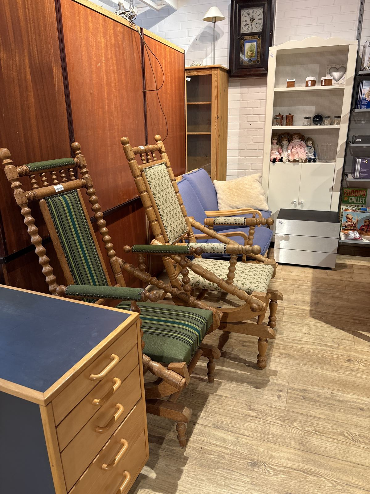
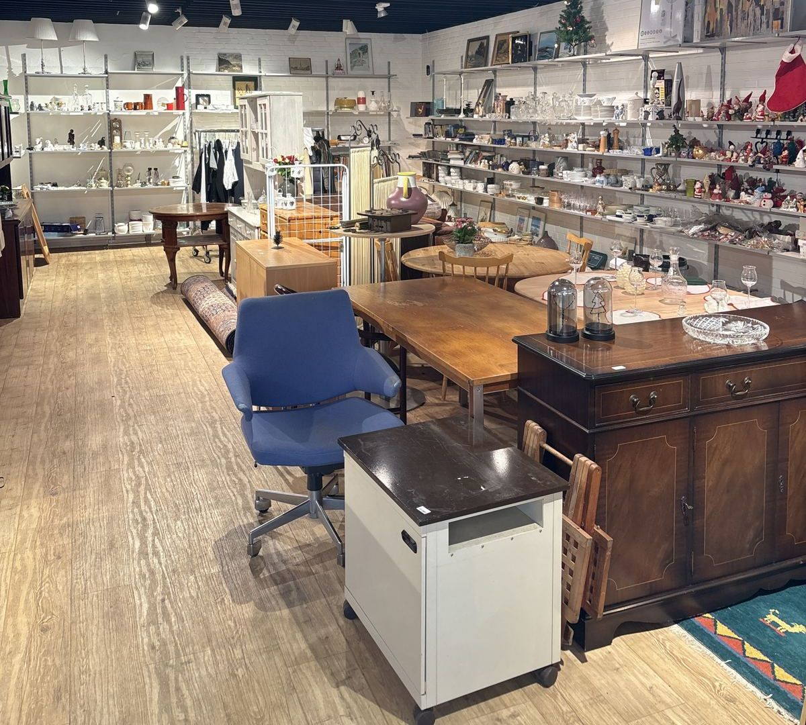
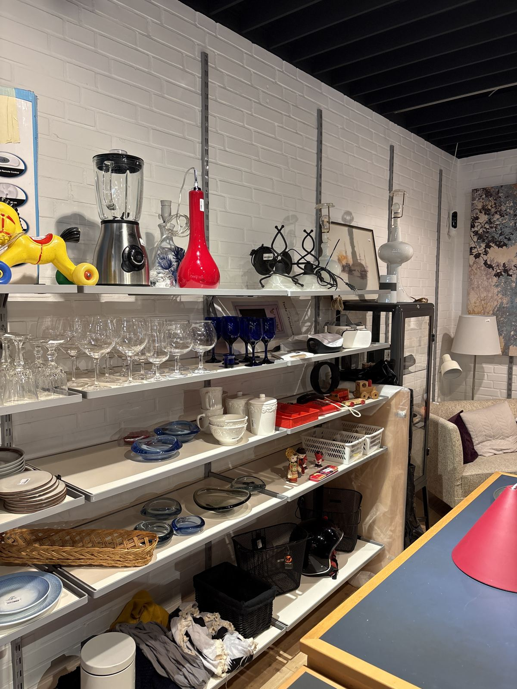
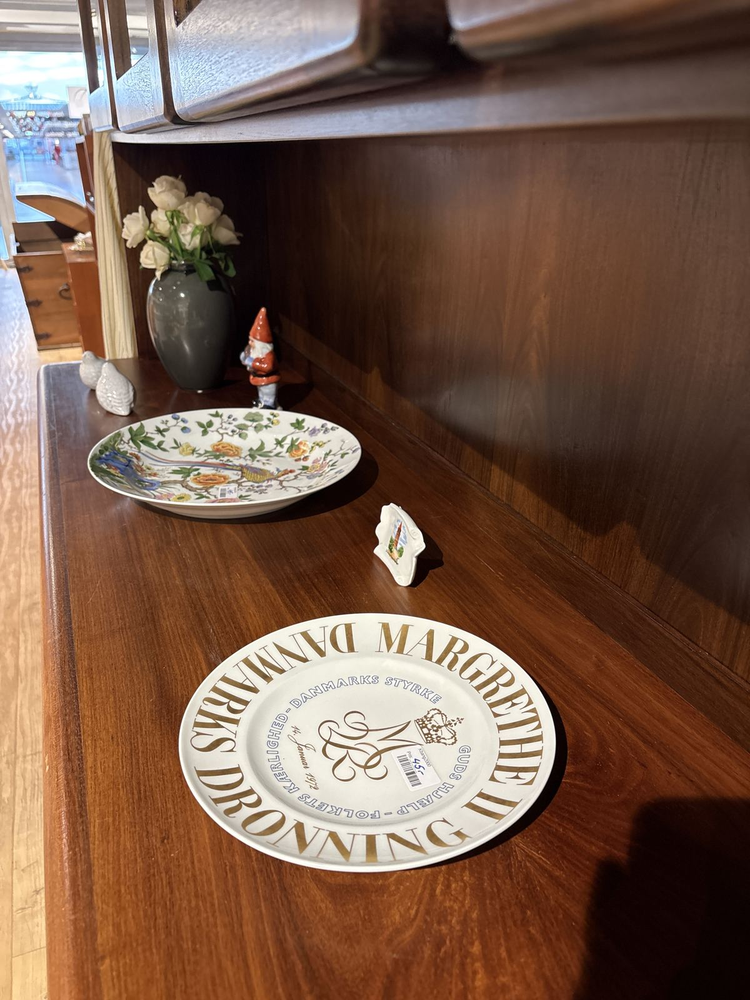
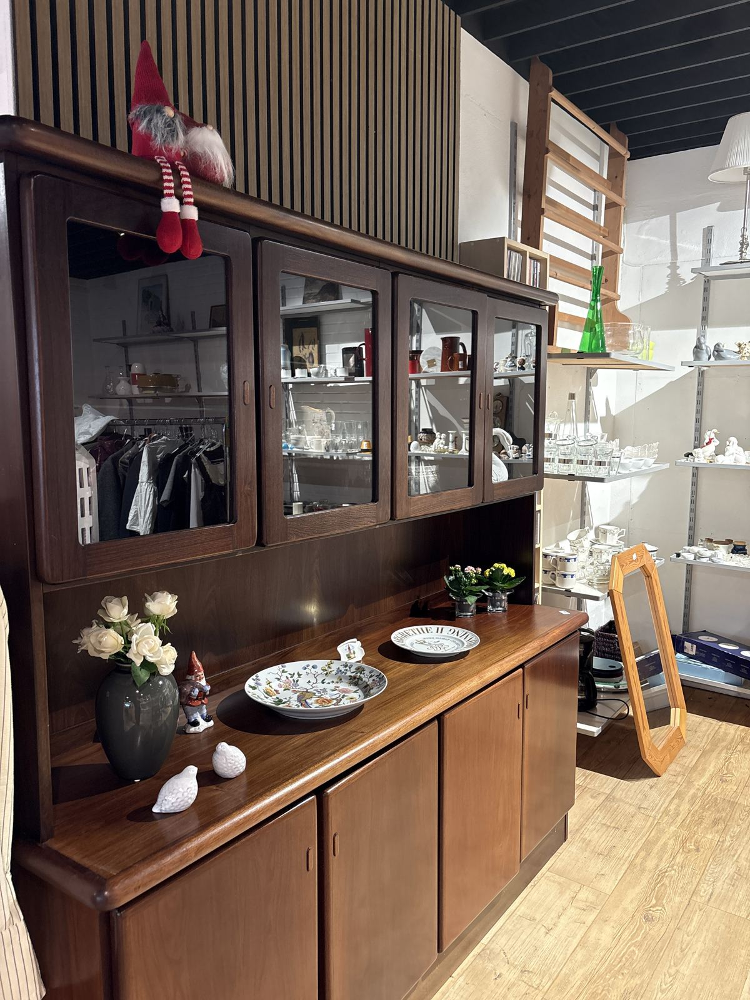

Møbler
Stole, borde, skabe, kommoder og reoler – fra det klassiske og solide til det sjove og skæve. Brugte møbler med historie, som er klar til et nyt hjem.
Genbrugsbutik · Loppemarked · Langeskov
Hos Reol-Loppen kan du gå på opdagelse mellem møbler, glas, porcelæn, lamper, billeder og ældre ting med historie. Der kommer nye fund ind hele tiden – så det er aldrig den samme tur to gange.

Vi er et loppemarked under tag med lidt af det hele. Her er nogle af de ting, du typisk kan gøre et godt fund i.

Stole, borde, skabe, kommoder og reoler – fra det klassiske og solide til det sjove og skæve. Brugte møbler med historie, som er klar til et nyt hjem.

Hylder fulde af glas, stel, skåle, vaser og lamper. Perfekt, hvis du mangler det sidste til spisebordet – eller bare noget, der gør hjemmet hyggeligere.

Platter, figurer, billeder og andre sager fra gamle dage. Her kan samleren og den nysgerrige finde lige det, de ikke vidste, de ledte efter.
Et lille kig ind ad døren. Det rigtige udvalg skal opleves – og det ser anderledes ud hver uge.

Kan du ikke nå forbi med det samme? Vi lægger nye ting op i vores stories på Instagram – så kan du sikre dig dem hjemmefra.
Vi viser nye ting på Instagram, så snart de kommer ind.
Svar på storyen eller send os en besked. Først til mølle.
Du får et link fra os, så du nemt kan betale.
Vi lægger din vare til side, så du kan hente den i åbningstiden.
Leder du efter en genbrugsbutik eller et loppemarked på Fyn? Reol-Loppen er et indendørs loppemarked og en genbrugsbutik i Langeskov Centeret i Langeskov – midt på Fyn, mellem Odense og Nyborg. Her kan du gøre gode fund i brugte møbler, retro og antikke ting, glas, porcelæn, lamper og pynt – samlet under tag, så du kan gå på opdagelse uanset vejret.
Genbrug er godt for både pengepungen og miljøet. Når du køber brugt, får ting med historie et nyt liv i stedet for at blive smidt ud. Og fordi udvalget skifter hele tiden, er der altid noget nyt at finde, når du kigger forbi.
Vi har åbent onsdag til fredag kl. 10–17 og lørdag og søndag kl. 10–16. Mandag og tirsdag er der lukket.
Du finder os i Langeskov Centeret 17 i Langeskov. Tryk på „Find vej" ovenfor, så åbner Google Maps.
Møbler, glas, porcelæn, lamper, billeder, pynt, ældre ting og meget andet. Udvalget skifter hele tiden, så kig forbi tit.
Der kommer nye ting ind hele tiden. Følg os på Instagram, så ser du dem, så snart de er på hylderne.
Ja. Ser du noget i vores stories på Instagram, så skriv „Den vil jeg have". Du får et MobilePay-link, og så lægger vi tingen til side, til du henter den i åbningstiden.
Ja. Vi køber brugte ting og tilbyder at tømme dødsboer. Læs mere og find telefonnumrene på siden om dødsbo og opkøb.
Ja, der er parkering ved Langeskov Centeret.
Langeskov ligger på Fyn mellem Odense og Nyborg. Butikken finder du i Langeskov Centeret 17.
Ja – husk at kigge i kælderen. Der er også masser at gå på opdagelse i.